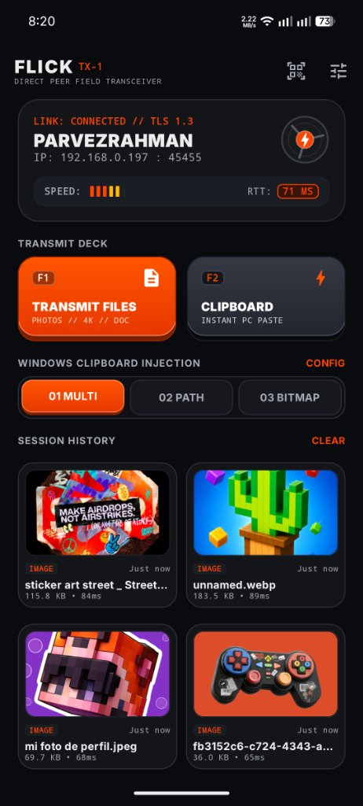
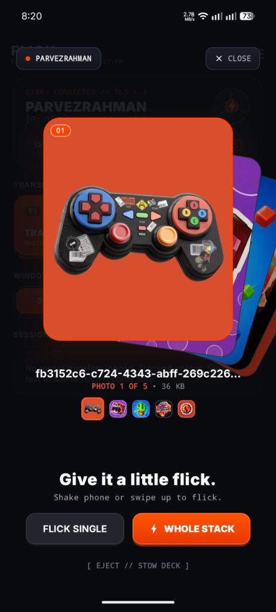
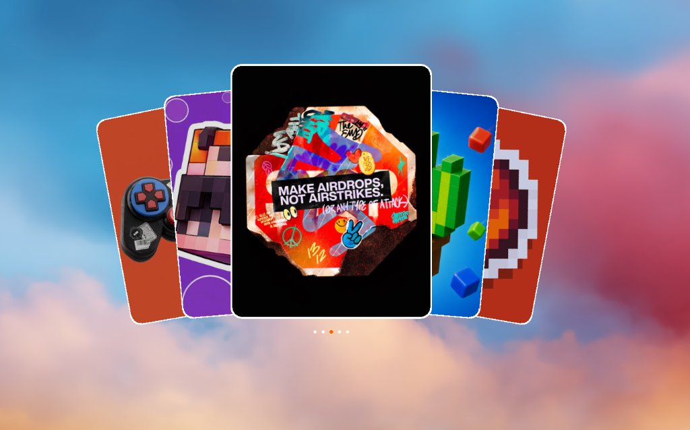
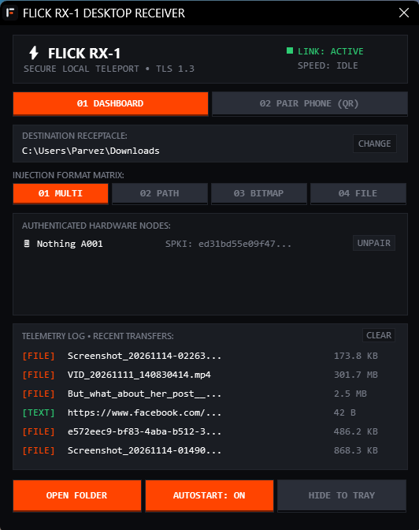

Phone to PC in a blink.
Zero Cloud. Just Ctrl + V.
Instant bi-directional file streaming and clipboard injection over high-speed local Wi-Fi. Skip cloud latency, chat uploads, and drive folders. Tap share or give it a flick on your phone, then press Ctrl + V anywhere on your Windows PC.
Built with Teenage Engineering hardware aesthetics.
Authentic software crafted like precision field audio equipment: tactile keycaps, monochrome telemetry displays, and machined obsidian surfaces.




Works seamlessly during power cuts & load shedding.
When your home router goes down in a power outage, Flick doesn't stop.
Simply turn on your phone's Portable Hotspot. Flick automatically detects direct hotspot subnets
(ap0 / swlan0) and routes all file transfers through direct peer-to-peer Wi-Fi.
From your phone screen into your desktop clipboard.
No cloud uploading. No WhatsApp chat web scraping. No digging through messy download folders.
1-Tap Share from Any App
Select photos, videos, or documents in your Gallery, Photos, or File Manager. Tap Flick to PC ⚡ from the native share sheet, or swipe up on the Spatial Flick Deck. A tactile haptic pulse confirms instant dispatch.
TeleportShareActivity // < 50ms dispatch
Local Wi-Fi & Turbo Link
Payloads stream directly over local Wi-Fi with hardware-accelerated TLS 1.3 encryption. For large media files (up to 4 GB+), Flick Turbo Link autonomously engages direct 5GHz P2P streaming at 36.5+ MB/s with zero-dropout restoration.
P2P Channel 149 // 306.4 Mbps throughput
Hit Ctrl + V on Windows
The native Rust receiver receives the stream and injects it atomically into the Windows clipboard. Press Ctrl + V inside File Explorer, Cursor, VS Code, Discord, or Figma—and your payload is right there.
CF_HDROP + CF_DIB + CF_UNICODETEXT
Smart Multi-Format Clipboard Engine
| TARGET WINDOWS APPLICATION | FORMAT CONSUMED ON CTRL + V | RESULTING EXPERIENCE |
|---|---|---|
File Explorer |
CF_HDROP | Pastes actual file copy into directory |
Cursor / Antigravity / Claude |
CF_HDROP / CF_DIB | Attaches image directly into AI promptbox |
Windows Terminal / PowerShell |
CF_UNICODETEXT | Pastes full absolute local path string |
Figma / MS Paint / Photoshop |
CF_DIB | Pastes raw uncompressed 24-bit bitmap onto canvas |
WhatsApp Web / Discord / Chrome |
CF_HDROP / CF_DIB | Uploads image directly into message composer |
Built for engineers who care about zero bloat.
How Flick measures against traditional Bluetooth, cloud messengers, and heavy Electron companion suites.
| SPECIFICATION / METRIC | FLICK COMPANION | BLUETOOTH / NEARBY | CLOUD MESSENGERS |
|---|---|---|---|
| Transfer Latency | < 50 ms (Direct Local UDP) | 3,000 – 10,000 ms | 2,000 – 5,000 ms + upload delay |
| Peak Throughput | 36.5+ MB/s (Turbo 5GHz) | 0.2 – 1.8 MB/s | Capped by home internet upload |
| Windows Destination | Direct OS Clipboard (Ctrl+V) | Downloads folder dialog | Saved files / Web browser cache |
| PC RAM Footprint | ~3.4 MB (Native Rust PE64) | OS background service | 150 MB – 600 MB (Electron) |
| Internet / Cloud Dependency | Zero (100% Offline / LAN) | Often requires cloud auth | Requires active public internet |
| Security Architecture | Mutual TLS 1.3 (P-256 ECDSA) | PIN / Bluetooth pairing | Third-party company servers |
| Power-Cut / Offline Hotspot | Full 36+ MB/s (UDP :45457 Probe) | Slow | Does not work |
Get Flick for your workstation & phone.
No installer wizard needed. Standalone executables ready to run immediately.
Flick for Windows
High-performance pure Rust receiver daemon. Runs silently in the system tray, listens on UDP 45454/TCP 45455, and handles atomic Win32 clipboard injection.
- Standalone executable (zero Python/runtime required)
- Silent background tray companion (zero hotkey conflicts)
- Private working set: only ~3.4 MB RAM
- NTFS MOTW & dangerous extension quarantine
Flick Companion for Android
Native Kotlin & Jetpack Compose application. Features the 3D Spatial Flick Deck, zero-latency Wi-Fi lock, and automated Turbo Link P2P direct Wi-Fi engine.
- Zero-UI 1-tap share target (under 50ms dispatch)
- Android Keystore StrongBox / TEE hardware encryption
- Dual-pulse tactile haptic feedback on send
- Supports offline mobile hotspot transfers during power cuts